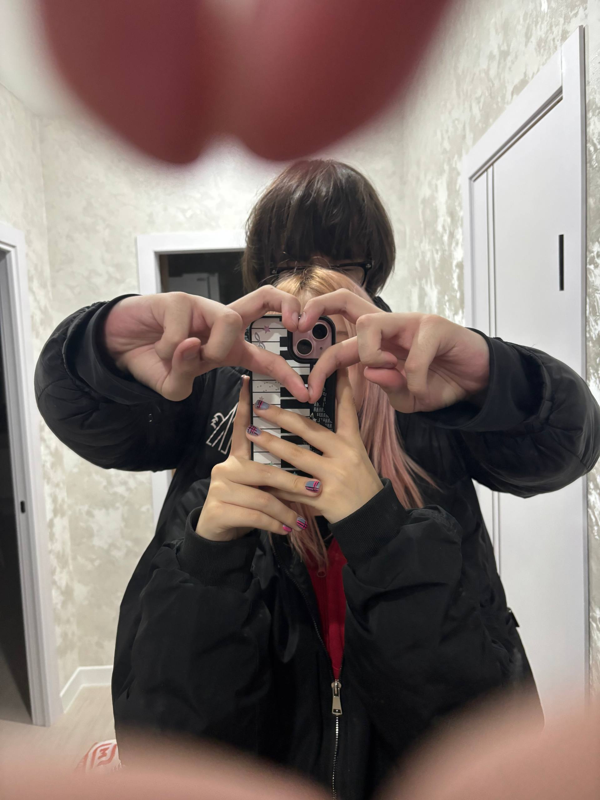
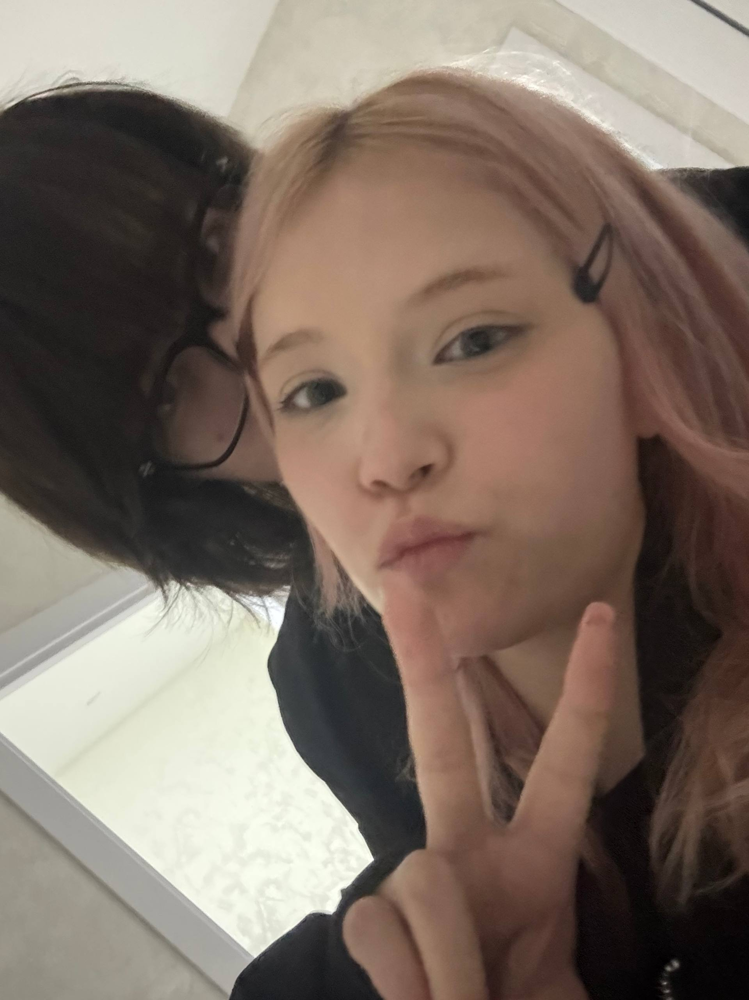
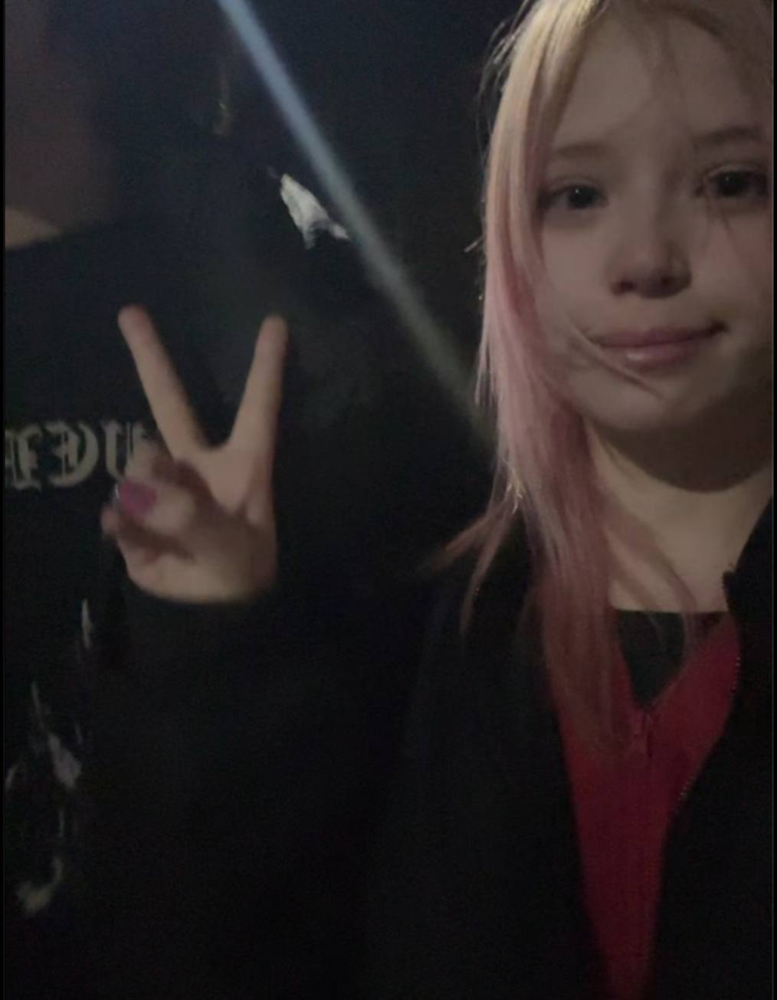
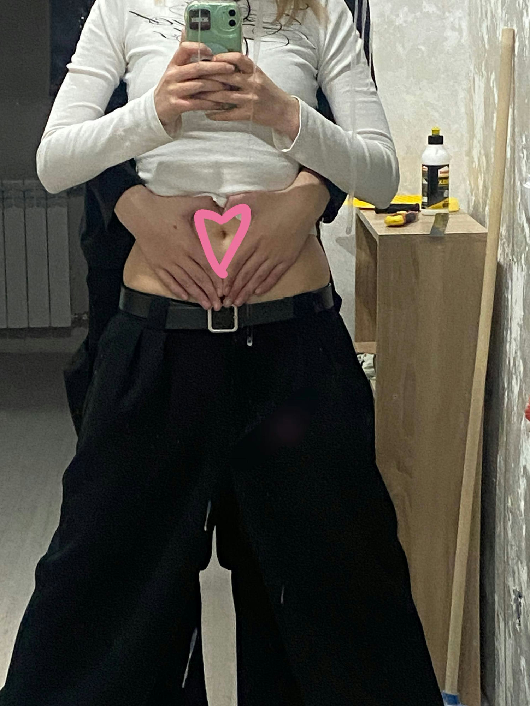
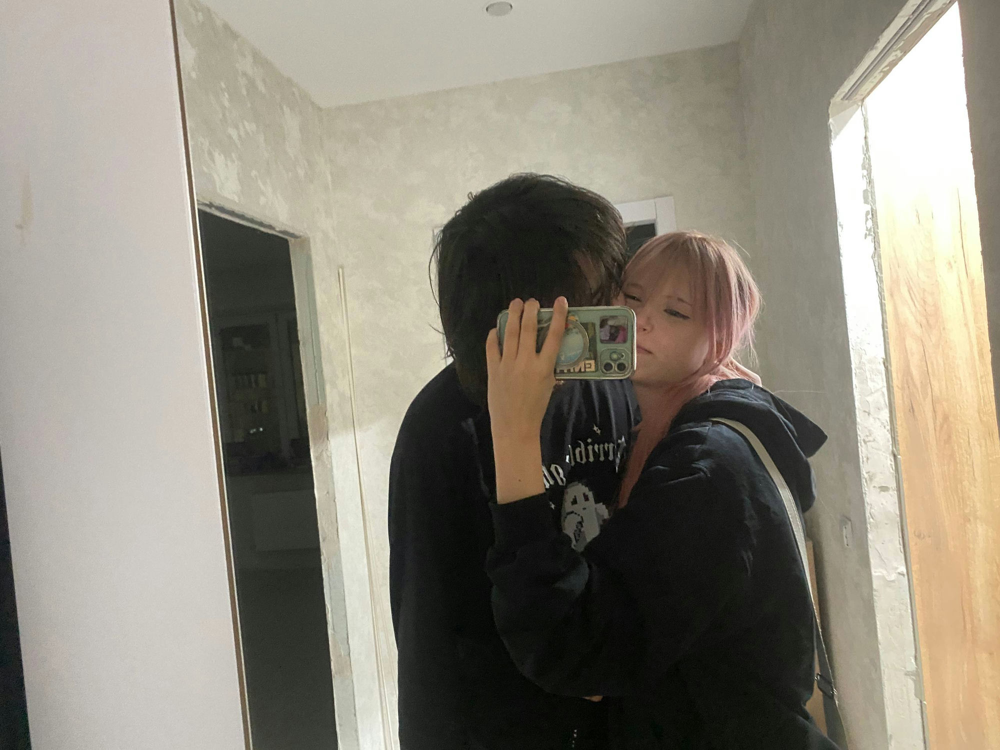
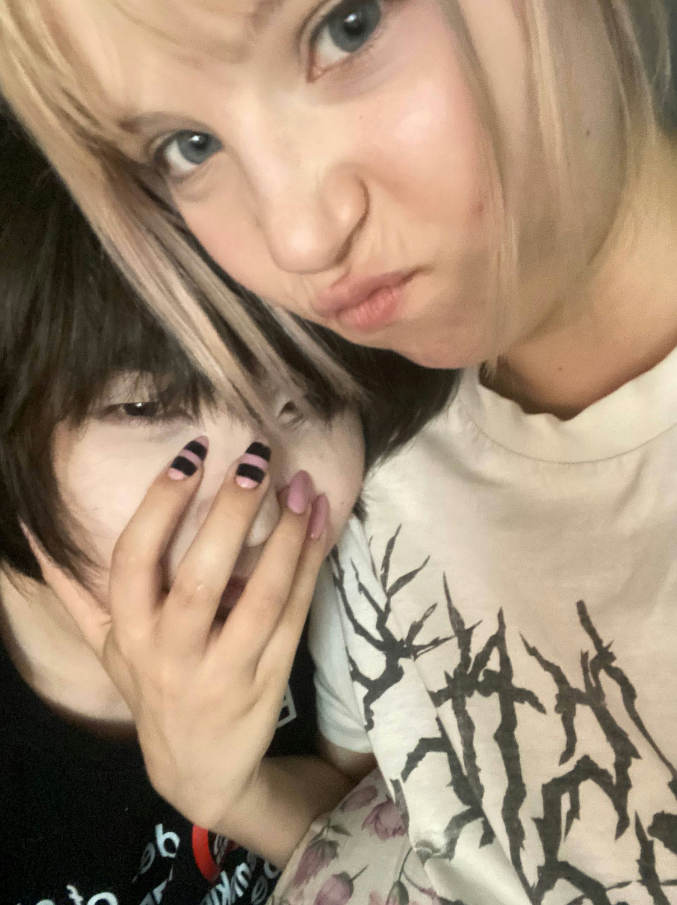
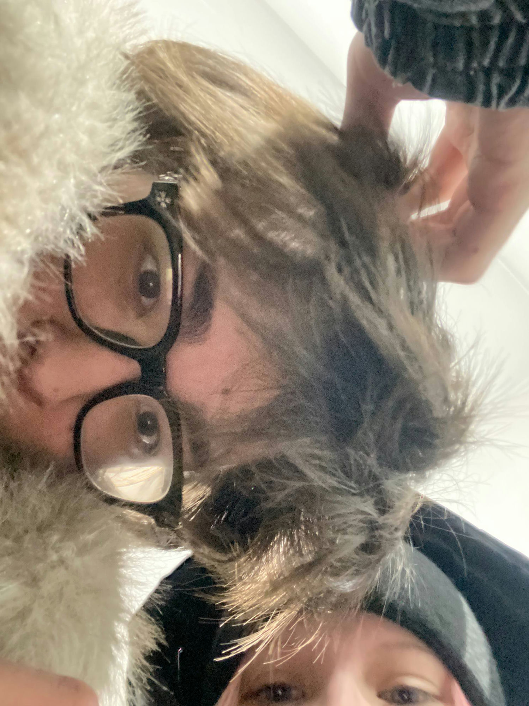
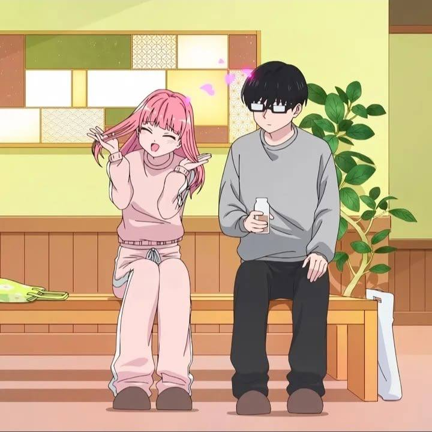

сидел на работе вот тебя вспомнил решил парочку наших фоток откопать и немножко видео и собрать их пока что сюда чтобы проса напомнить тебе что я тебя люблю вот хочется как-то напомнить да какт проявить внимание но я не знаю как эта сделать кроме как стандартных сообщений поэтому решил что нада сделать чтото что я умею делать намана а эта сайтики и красива писать
кароч тут 5 записочек тама каждая для конкретного случая но если захоч можешь пряма сейчас все все все открыть и прочитать я писал от всево сердцаа
ваще тама нет ничего такого необычного но тама мои слова(
илюшаа
я люблю тебя просто напишу это тут прямо чтоб ты прочитала не важно в какой момент ты обязана знать что я тебя люблю!
не за что-то конкретное а за то как ты рядом со мной не пытаешься быть удобной и правильной и за то что мне с тобой спокойнее чем я умел ожидать от кого-то
сейчас может быть плохо это не навсегда и я пока не знаю что сказать чтобы стало легко но я никуда не исчезну!!
всегда когда смотрю на тебя понимаю что ты моя девушка и радуюсь внутри себя как ребенок)) (наверн лучше было бы сказать тот маленький илюша прыгает от счастья когда понимает что ты моя девушка И ВЗРОСЛЫЙ ИЛЮША ТОЖЕ!)
люблю тебя и мне все равно куда гулять и когда хоть вокруг дома хоть в другую страну главное что ты рядом со мной(
ты может иногда думаешь(надеюсь нет) что я устал от тебя или что тебе надоело нет мне с тобой проще чем с кемлибо на свете и я не играю при тебе роль это тоже изза тебя
когда выйдешь просто подыши нормально воздух штука полезная хоть и кажется что нафик нада(ну эта если захоч погулять типа пряма сразу или может вдруг со мной захоч погулять то проса позвони я мигом приеду к тибе и мы погуляем!)
я тоже скучаю( почти всегда блин даже когда мы весь день переписываемся по делу и оба заняты
и отдельно кариша спасибо что говоришь мне "люблю" просто так без повода типа не все так умеют а ты можешь в любой момент и я каждый раз это замечаю и молча радуюсь как дурак(КАК ТЫ ЛЮБИШЬ ГОВОРИТЬ ДУРАК НО МОЙ)
пиши мне хоть в три ночи типа я серьезна блин я рад когда ты пишешь мне ваще по любому поводу
люблю тебя когда ты смешная и когда грусная просто тогда тихонечка держу и обнимаю крепче
а еще я до сих пор не умею смотреть на тебя когда ты смеешься сразу сам начинаю улыбаться как дурачок
мне не нужна веселая и ухоженная версия тебя я жду любую в старых джинсах уставшую и без настроения тоже жду!(настроение исправим не праблема)
это последний конверт наверна тут самое главное
я тебя люблю не забочусь не "мне приятно" а вот блин именна люблю и мне от тебя ничего не нужно в ответ кроме того чтобы ты была са мной
ты можешь быть грустной уставшей молчаливой некрасивой по своему мнению тип я все равно выберу тебя каждый раз заново
мы ещё в китай поедем, будем вместе чемоданы собирать))))